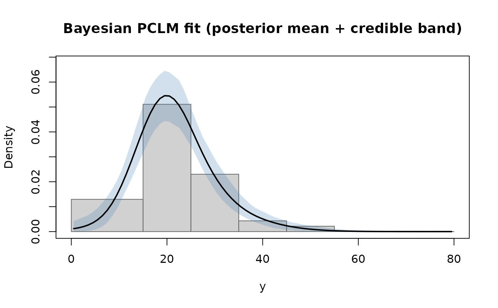

Bayesian penalised composite link model for grouped data
bpclm.RdFits the model of Lambert and Eilers (2009) by Markov chain Monte
Carlo. The sampler is Metropolis-within-Gibbs: a modified
Langevin-Hastings update for the spline coefficients followed by a
Gibbs draw for the smoothing precision \(\tau\). Optional shape
constraints ("unimodal", "logconcave", "monotonic")
are imposed by rejecting proposals whose induced density violates
them.
Usage
bpclm(m, wide_breaks,
a = NULL, b = NULL,
ngrid = 100L,
ndx = 17L, degree = 3L,
penalty_order = 3L,
niter = 5000L,
burnin = NULL,
thin = 1L,
adapt = 500L,
tau_init = NULL,
a_tau = 1e-4, b_tau = 1e-4,
delta_init = NULL,
target_accept = 0.57,
Sigma = NULL,
shape = NULL,
shape_args = list(),
phi_init = NULL,
seed = NULL,
verbose = FALSE)Arguments
- m, wide_breaks, a, b, ngrid, ndx, degree, penalty_order
See
pclm.- niter
Number of MCMC iterations (including burn-in). Default 5000.
- burnin
Number of initial iterations to discard. Default
floor(niter / 5).- thin
Thinning interval (default 1).
- adapt
Number of additional adaptive-tuning iterations performed before the main run. Default 500.
- tau_init
Initial value of the precision \(\tau\).
NULL(default) uses the BIC-selected value of the frequentist warm-start fit.- a_tau, b_tau
Hyperparameters of the \(\Gamma(a, b)\) hyperprior on \(\tau\). Defaults
1e-4each.- delta_init
Initial Langevin step size; default \(1.65^2 / K^{1/3}\).
- target_accept
Target acceptance rate during adaptation (default 0.57).
- Sigma
Optional positive-definite \(K \times K\) proposal covariance.
NULL(default) uses the frequentist warm-start variance-covariance.- shape
Optional shape constraint(s). Any subset of
"unimodal","logconcave","monotonic".- shape_args
Additional arguments for the shape indicators (currently only
directionfor monotonicity).- phi_init
Optional starting value for \(\phi\); defaults to the frequentist MLE.
- seed
Optional integer for reproducibility.
- verbose
Print progress every 10% of iterations.
Value
An object of class "bpclm"; see pclmbayes-package.
References
Lambert, P. and Eilers, P. H. C. (2009). Bayesian density estimation from grouped continuous data. CSDA, 53(4), 1388–1399.
Roberts, G. O. and Rosenthal, J. S. (1998). Optimal scaling of discrete approximations to Langevin diffusions. JRSS B, 60(1), 255–268.
See also
pclm.
Examples
# \donttest{
data(bloodlead)
fit <- bpclm(m = bloodlead$count,
wide_breaks = with(bloodlead, cbind(lower, upper)),
a = 0, b = 80, ngrid = 80, ndx = 17,
niter = 2000, burnin = 500, shape = "unimodal", seed = 1)
summary(fit)
#> Bayesian penalised composite link model
#> Call: bpclm(m = bloodlead$count, wide_breaks = with(bloodlead, cbind(lower,
#> upper)), a = 0, b = 80, ngrid = 80, ndx = 17, niter = 2000,
#> burnin = 500, shape = "unimodal", seed = 1)
#>
#> Number of wide bins: 7 | total counts: 139
#> Fine grid:80intervals on (0, 80)
#> B-spline basis: K = 20 (degree = 3 )
#> Penalty order r = 3
#> MCMC: niter = 2000, burnin = 500, thin = 1, kept = 1500
#> Final delta = 1.09 | acceptance rate = 0.63
#> Shape constraint(s): unimodal
#> Posterior mean tau = 19.5 (sd 46.7)
#>
#> Posterior of mean(Y): 21.7779 (90% CI: 20.5296, 23.0596)
#> Posterior of sd(Y): 8.2889 (90% CI: 7.1929, 9.3911)
#>
#> Posterior summaries of quantiles (mean and 90% CI):
#> p mean lo hi
#> 0.05 9.6024 7.0296 11.6006
#> 0.10 12.0372 10.1232 13.6278
#> 0.25 16.1954 14.9382 17.4892
#> 0.50 20.9888 19.7886 22.4045
#> 0.75 26.4068 24.8010 28.1725
#> 0.90 32.5078 30.0854 35.0971
#> 0.95 36.9349 33.7977 40.6506
plot(fit)

# }